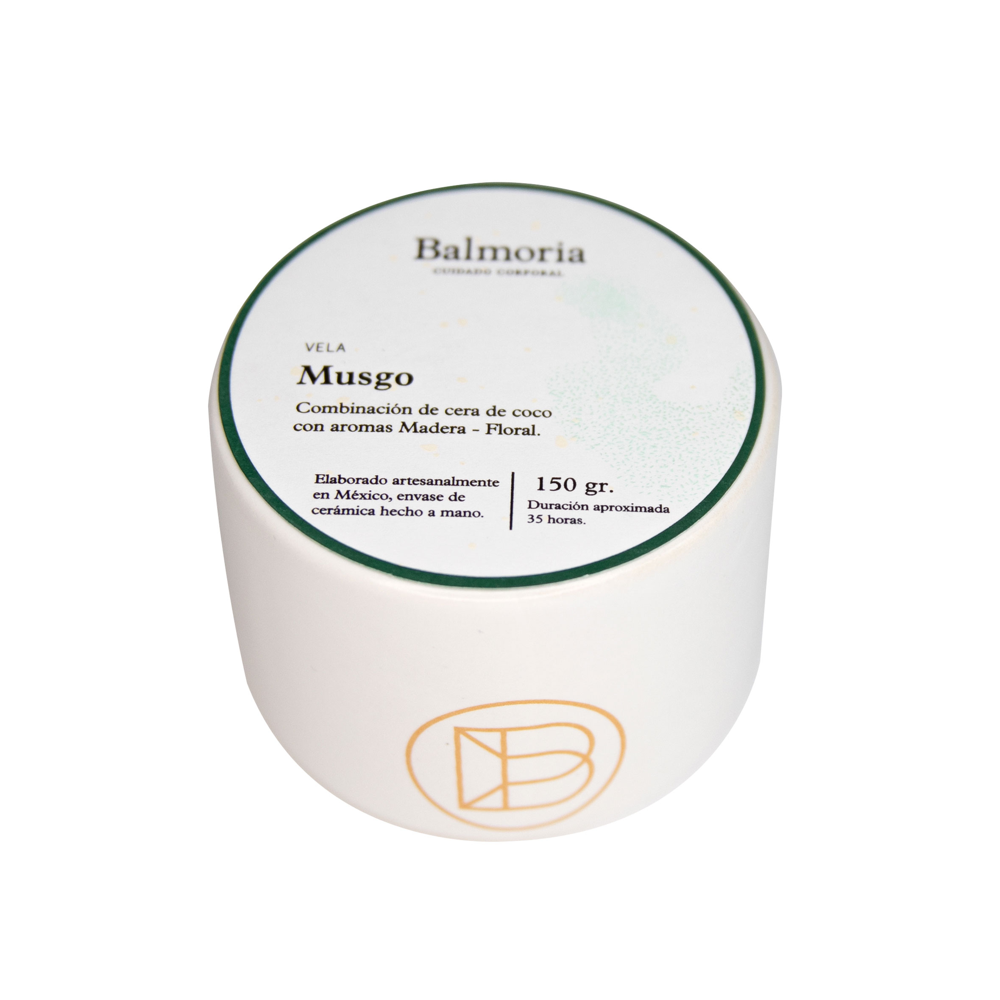

La Vela Aromática Musgo de Balmoria es una combinación de notas masculinas con un toque floral, que moderniza las maderas clásicas sin dejar de hacerlas familiares. Está elaborada con cera de coco y está vaciada a mano en un envase de cerámica artesanal. Notas de salida: naranja agria y limón amarillo Notas de corazón: lila y bouquet de flores Notas de fondo: musgo, madera y tabaco
